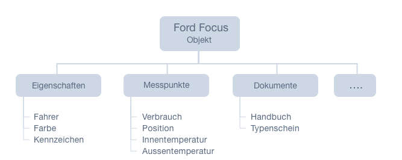
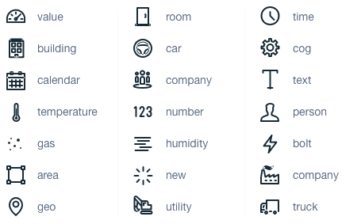

English
English Deutsch
DeutschEinleitung
Willkommen bei der LineMetrics API SDK Dokumentation. Dieses SDK vereinfacht den Zugriff auf die LineMetrics API und kapselt Aufrufe in das Objektmodell mit semantischer Information. Diese Dokumentation arbeitet mithilfe von Beispielen in der rechten Spalte.
Version 2.1.0.2
Diese Dokumentation ist aktuell in Version 2.1.0.2
Vorteile
Durch das Kapseln der LineMetrics Rest API können dem Endnutzer (In diesem Fall dem Entwickler) viele Aufgaben abgenommen werden. Access Token Validierung und Erneuerung, arbeiten mit Daten und vieles mehr.
Grundaufbau
Zuerst wird muss eine Verbindung mit der LineMetrics API hergestellt werden. Diese benötigt aktuell Client ID und das Client Secret. Nach erfolgreicher Authentifizierung wird ein LM_API Objekt zurückgegeben. Dieses dient als Schnittstelle zu den LineMetrics Servern und kümmert sich um den gesamten Datenverkehr. Dadurch fallen mögliche Fehlerquellen wie falsch gesetzte Header, Formatfehler oder Access token Handling weg.
Dem Entwickler steht es nun offen Objekte direkt anzusprechen. Entweder per ID, per Custom Key/Alias oder auch per Objekttyp. Ziel des SDK’s ist es die Abfragen an echten Objekten zu orientieren und so einen einfacheren Einstieg zu gewährleisten.
Objektaufbau
Ein Objekt spiegelt ein reales Objekt wieder und beschreibt dieses auch durch Meta Informationen. Beispielsweise ein Fahrzeug, eine Maschine oder auch ganze Gebäude können mit dem LineMetrics Objektservice virtualisiert werden. Dabei werden Daten aus verschiedenen Datenquellen (LineMetrics Hardware, API Schnittstellen, Externe Hardware) gesammelt und zentral mit dem Objekt angezeigt.
Hier ein Beispiel anhand eines Fahrzeuges wie ein Objekt aufgebaut sein kann:

Funktionen
Authentifizierung
Um Funktionen nutzen zu können, muss der Benutzer authentifiziert sein. Dafür verfügen die SDK’s über 2 verschiedene Verfahren
Client Credentials
// CLIENT_ID und CLIENT_SECRET finden Sie unter den API's auf der LineMetrics Plattform
var api = new LM_API("client_credentials",CLIENT_ID,CLIENT_SECRET);
ILMService api = new LineMetricsService("client_id", "client_secret");
Bei den Client Credentials handelt es sich um den Authentifizierungstyp der standardmäßig verwendet werden soll. Dieser ermöglicht durch die Authentifizierung über die Parameter ‘Client ID’ und 'Client Secret’ Zugriff auf alle Daten des Accounts, für den der Zugang angelegt wurde.
Zur Initialisierung müssen lediglich Client Id und Client Secret übergeben werden.
Passwort Grant
// Kontaktieren Sie support@linemetrics.com für eine freischaltung dieses Authentifizierungstyps
var api = new LM_API("client_credentials",CLIENT_ID,CLIENT_SECRET,EMAIL,PASSWORD);
ILMService api = new LineMetricsService(
"client_id", "client_secret",
"email", "password");
Beim Passwort Grant erfolgt die Authentifizierung des Rest Clients wie gewohnt über die Parameter 'Client ID’ und 'Client Secret’. Zusätzlich müssen die Parameter 'E-Mail’ und 'Passwort’ übergeben. Dadurch wird ein Session Token generiert, der genau für das jeweilige Konto gültig ist. Dieser Typ der Authentifizierung muss über support@linemetrics.com beantragt werden.
Logout
// Loggt den User aus und kappt die Verbindung mit dem LineMetrics Server
api.logout();
api.Logout();
Beim ausloggen werden alle Access Token automatisch invalidiert.
API | Generische Funktionen
// Prüft ob der aktuell verwendete OAuth Token valide ist.
// Wenn dies zutrifft, wird die als Parameter übergebene Callbackfunktion ausgeführt.
api.checkToken(callback);
// ladet ein einzelnes Objekt anhand der zugehörigen ID oder Alias
// per Id
api.load("a091377b1009cbff91ad4e706c0353bf");
// per Customkey
api.load("my_custom_key");
// per Id und Alias
api.load("my_custom_key/temperature");
// per Customkey und Alias
api.load("a091377b1009cbff91ad4e706c0353bf/temperature");
// ladet die erste Ebene der Assets und gibt diese als Array zurück
api.loadAssets();
// lädt die erste Ebene der Assets und gibt diese als Array zurück
api.LoadAssets();
// lädt ein Objekt per Id
// (Rückgabe Wert ist BaseType "ObjectBase")
api.LoadObject("a091377b1009cbff91ad4e706c0353bf"));
// lädt ein Objekt per CustomKey
// (Rückgabe Wert ist BaseType "ObjectBase")
api.LoadObjectByCustomKey("my_custom_key");
// lädt ein Objekt per CustomKey und Alias
// (Rückgabe Wert ist BaseType "ObjectBase")
api.LoadObject("my_custom_key", "temperature");
Objekte, Eigenschaften, Messpunkte und andere verfügen über einzigartige ID’s. Zum direkten Abfrage dieser, können folgende Funktionen verwendet werden, unabhängig vom Typ.
Zur Abfrage können auch Alias oder Custom Keys verwendet werden. Eine nähere Beschreibung ist hier zu finden
| Funktionsname | Parameter | Kurzbeschreibung |
|---|---|---|
| checkToken | Keine | Prüft ob der aktuelle Token gültig ist |
| load | String 'id’ | Lade ein Objekt, Eigenschaft, Messpunkt, etc… Auf Grund der ID oder des hinterlegten Alias/Custom Keys |
| loadAssets | Keine | Ladet alle Assets der 1. Ebene |
Objekt | (engl. Asset)
Objekte - oder auch Assets genannt - sind die virtualisierte Form echter Objekte. z.B: Fahrzeuge, Gebäude, Maschinen, usw…
Diese Objekte verfügen über diverse Eigenschaften, Dokumente oder auch Messpunkte.
Informationen
asset.getId();
asset.getTitle();
asset.getIcon();
asset.getImage();
asset.getChildrenInfo();
// Rückgabe wäre beispielsweise:
// {
// property: 4,
// datastream: 2
// }
asset.Id;
asset.Title;
asset.Icon;
asset.CustomKey;
asset.ChildrenInfo;
// Rückgabewert ist vom Typ Dictionary
// und beinhaltet Anzahl und Typ der Kinder des Assets
| Funktionsname | Parameter | Kurzbeschreibung |
|---|---|---|
| getId | Keine | Die Id des Assets, wenn ein Custom Key verfügbar ist, wird dieser zurückgegeben |
| getTitle | Keine | Der Titel des Assets |
| getIcon | Keine | Das Icon des Assets |
| getImage | Keine | Das Bild des Assets (Absoluter Pfad) |
| getChildrenInfo | Keine | Gibt ein Array mit allen vorhandenen Kind Elementen zurück, inklusive der Anzahl |
Unterobjekte laden
// Gibt ein Array von darunter liegenden Assets zurück
asset.loadAssets(function(assets){
// Array assets
});
// Gibt ein Array von darunter liegenden Eigenschaften zurück
asset.loadProperties().then(function(properties){
// Array properties
});
// Gibt ein Array von darunter liegenden Messpunkten zurück
asset.loadDataStreams(["temperature","status"]).then(function(dataStreams){
// Array dataStreams
});
// Gibt ein Array von darunter liegenden Dokumenten zurück
asset.loadDocuments().then(function(documents){
// Array documents
});
// Gibt ein Array von darunter liegenden Assets zurück
asset.LoadAssets();
// Gibt ein Array von darunter liegenden Eigenschaften zurück
asset.LoadProperties();
// Gibt ein Array von darunter liegenden Messpunkten zurück
asset.LoadDataStreams();
| Funktionsname | Parameter | Kurzbeschreibung |
|---|---|---|
| loadAssets | Keine | Liefert alle darunter liegenden Assets |
| loadProperties | Array 'alias' |
Liefert alle Eigenschaften mit den Aliases Wenn leer, werden alle Eigenschaften geladen |
| loadDataStreams | Array 'alias' |
Liefert alle Messpunkte mit den Aliases Wenn leer, werden alle Messpunkte geladen |
| loadDocuments | Array 'alias' |
liefert alle Dokumente mit den Aliases Wenn leer, werden alle Dokumente geladen |
Objekt ändern
Zum ändern von einem Asset können die verschiedenen verfügbaren Werte wie folgt geändert werden. Zum persistieren und endgültigen abspeichern, wird schlussendlich die save Methode aufgerufen
asset.setTitle("Neuer Titel");
asset.setCustomKey("mein_key");
asset.setIcon("car");
asset.save();
asset.Title = "Neuer Titel";
asset.CustomKey = "mein_key";
asset.Icon = "car";
asset.Save();
| Funktionsname | Parameter | Kurzbeschreibung |
|---|---|---|
| setTitle | String 'title' |
Der Titel des Assets |
| setCustomKey | String 'key' |
Der Custom Key für das Objekt (Muss einzigartig sein) |
| setIcon | String 'icon' |
Das Icon des Assets Verfügbare Icons |
| save | Keine | Speichert das aktuelle Objekt ab |
Eigenschaften | (engl. Property)
Eigenschaften oder Metainformationen von Objekten beschreiben dieses mit statischen Werten. Diese ändern sich im Regelfall nicht oft oder nur selten. Das Ändern von Eigenschaften passiert meist manuell. Beispielsweise der Standort von Gebäuden, Grundfläche, Raumanzahl, etc…
property.getId();
property.getTitle();
property.getIcon();
property.getValue();
property.Id;
property.Title;
property.Icon;
property.Value;
| Funktionsname | Parameter | Kurzbeschreibung |
|---|---|---|
| getId | Keine | Die Id der Eigenschaft, wenn ein Alias verfügbar ist, wird dieser zurückgegeben |
| getTitle | Keine | Der Titel der Eigenschaft |
| getIcon | Keine | Das Icon der Eigenschaft |
| getValue | Keine | Der Wert der Eigenschaft |
Eigenschaft ändern
Zum Ändern von einer Eigenschaft können die verschiedenen verfügbaren Werte wie folgt geändert werden. Zum persistieren und endgültigen abspeichern, wird schlussendlich die save Methode aufgerufen
property.setTitle("Neuer Titel");
property.setAlias("mein_alias");
property.setIcon("car");
property.setValue({
"val":"Neuer Wert"
});
property.save();
property.Title = "Neuer Titel";
property.Alias = "mein_alias";
property.Icon = "car";
property.Value = new LineMetrics.API.DataTypes.Double { Value = 3.14 };
property.Save();
| Funktionsname | Parameter | Kurzbeschreibung |
|---|---|---|
| setTitle | String 'title' |
Der Titel der Eigenschaft |
| setAlias | String 'alias' |
Der Alias für die Eigenschaft (Muss unter dem Objekt einzigartig sein) |
| setIcon | String 'icon' |
Das Icon der Eigenschaft Verfügbare Icons |
| setValue | Array 'val' |
Der Wert der Eigenschaft Format abhängig vom Typ zu den Eigenschaftstypen |
| save | Keine | Speichert die aktuelle Eigenschaft ab |
Messpunkte | (engl. DataStream)
Messpunke von Objekten speichern und visualisieren dynamische Daten eines Objektes. Diese werden meist automatisiert von LineMetrics Hardware, über die API oder über Dritt Hardware gemessen und in den Messpunkt geschrieben. Beispielsweise der die Position von Fahrzeugen, der Verbrauch, Aussentemperatur, etc…
Informationen
datastream.getTitle();
datastream.getIcon();
datastream.Id;
datastream.Title;
datastream.Icon;
datastream.DataTypes;
// liefert die unterstützten Input/Output Datentypen zurück
| Funktionsname | Parameter | Kurzbeschreibung |
|---|---|---|
| getId | Keine | Die Id des Messpunktes, wenn ein Alias verfügbar ist, wird dieser zurückgegeben |
| getTitle | Keine | Der Titel des Assets |
| getIcon | Keine | Das Icon des Assets |
Daten laden
// ladet Daten der letzten Stunde in Form eines Arrays zurück
datastream.loadData(1475154530000,1475150930000,"PT1M","Europe/Vienna").then(function(values){
// Array values
});
// ladet den Letztwert
datastream.loadLastValue(function(value){
// Array value
});
// ladet Daten der letzten Stunde und fügt diese in ein automatisch erstelltes Chart. Dieses wird in das Container Element geimpft (Ein jQuery selector wird verwendet, zb: $(".chart") )
datastream.createChart($("#container"),1475154530000,1475150930000,"PT1M","Europe/Vienna");
// lädt die Daten des angegebenen Zeitraumes und der gewünschten Funktion (RAW, AVERAGE, SUM)
// liefert eine Liste von Instanzen der Basisklasse "DataReadResponse" zurück
// Instanzen müssen entsprechend gecastet werden (AggregatedDataReadResponse oder
// RawDataReadResponse (beinhaltet wiederum einen normalen LineMetrics Datentyp))
datastream.LoadData(
1475154530000, 1475150930000,
"Europe/Vienna", "PT1M", "DEFAULT");
// lädt den Letztwert
// liefert die Basisklasse der Datentypen zurück, muss entsprechend gecastet werden
datastream.LoadLastValue();
| Funktionsname | Parameter | Kurzbeschreibung |
|---|---|---|
| loadData | Int 'from' Int 'to' Int 'granularity' Int 'timezone' * |
ladet Daten der letzten Stunde in Form eines Arrays zurück |
| loadLastValue | Keine | ladet den letzten Datenpunkt |
| createChart | Html El 'container' Int 'from' Int 'to' Int 'granularity' Int 'timezone' * |
Erstellt ein Chart mit dem mitgegeben Zeitraum |
* = Optional
Die Granularität definiert wie sehr die Daten komprimiert werden. Dabei werden Zeitspannen im standardisierten ISO 8601 Format verwendet. Wird 1 Stunde abgefragt mit der Granularität 1 Minute, würden 60 Werte als Antwort geliefert. Bei einer Granularität von 15 Minuten auf 1 Stunde nur 4 Werte.
Beispiele:
PT1M: 1 MinutePT4H: 4 StundenP1D: 1 TagP1M: 1 Monat
Messpunkt ändern
datastream.setTitle("Neuer Titel");
datastream.setAlias("mein_alias");
datastream.setIcon("car");
datastream.save();
datastream.Title = "Neuer Titel";
datastream.Alias = "mein_alias";
datastream.Icon = "car";
datastream.Save();
| Funktionsname | Parameter | Kurzbeschreibung |
|---|---|---|
| setTitle | String 'title' |
Der Titel des Messpunktes |
| setAlias | String 'alias' |
Der Alias für den Messpunkt (Muss unter dem Objekt einzigartig sein) |
| setIcon | String 'icon' |
Das Icon des Messpunktes Verfügbare Icons |
| save | Keine | Speichert den aktuellen Messpunkt ab |
Daten einspielen
// Speichert einen neuen Datenpunkt in den Messpunkt
datastream.saveData({
"min" : 0.234,
"val" : 1.678,
"max" : 6.890
});
// Speichert einen neuen Datenpunkt in den Messpunkt
datastream.saveData(
new LineMetrics.API.DataTypes.Double { Value = 3.14 });
| Funktionsname | Parameter | Kurzbeschreibung |
|---|---|---|
| saveData | Array 'point' |
Benötigt das Array im richtigen Format zu den Datentypen |
Dokumente | (engl. Document)
document.getId();
document.getTitle();
document.getFile();
| Funktionsname | Parameter | Kurzbeschreibung |
|---|---|---|
| getId | Keine | Die Id des Dokuments |
| getTitle | Keine | Der Titel des Dokuments |
| getFile | Keine | Die Url, unter der das Dokument zu finden ist |
Dokument ändern
Zum ändern von eines Dokuments können die verschiedenen verfügbaren Werte wie folgt geändert werden. Zum persistieren und endgültigen abspeichern, wird schlussendlich die save Methode aufgerufen
document.setTitle("Neuer Titel");
property.save();
| Funktionsname | Parameter | Kurzbeschreibung |
|---|---|---|
| setTitle | String 'title' |
Der Titel des Dokuments |
| save | Keine | Speichert die aktuelle Eigenschaft ab |
Ressourcen
Custom Keys und Alias
Custom Keys und Alias sind dafür gedacht, den Umgang mit Objekten, Messpunkten und Co zu vereinfachen. Jedes Element, welches über die API abgefragt werden kann (Objekte, Messpunkte, Eigenschaften,…) verfügen über eine eindeutige ID. Diese ID ist ein Konstrukt aus 32 aufeinanderfolgenden Zeichen und Zahlen und stellt eine eindeutige ID dar.
Custom Key
Bei Objekten kann ein Custom Key definiert werden. Über diesen ist es dann möglich ein spezifisches Objekt nicht mehr nur über die ID, sondern auch über den Custom Key abzufragen. Im gesamten System darf ein Custom Key nur 1x vorhanden sein.
Alias
Ein Messpunkt / Eine Eigenschaften sind Ausprägungen eines Assets und stellen aktuelle Zustände (als Wert oder auch als Zeitreihe) oder auch Eigenschaften des Assets (z.B. Wie groß ist mein Gebäude?) dar. Diese Art von Information kann - wie auch ein Asset - direkt per UID angesprochen werden. Parallel dazu gibt es aber auch hier die Möglichkeit einen sogenannten Alias zu hinterlegen. Auch dieser ist frei wählbar, muss allerdings innerhalb des Assets eindeutig sein. Mit Custom Key und Alias haben wir somit die Möglichkeiten Abfragen auf Daten in der Form durchzuführen: Maschine1/Auslastungsgrad -> Gib mir für meine Maschine 1 den Auslastungsgrad
Datentypen Messpunkte
| Datentyp | Parameter | Beschreibung |
|---|---|---|
| Double | Float 'val' |
Wert |
| DoubleAverage | Float 'val' Float 'min' Float 'max' |
Durchschnittswert Minimum Wert Maximum Wert |
| Bool | Bool 'val' |
Booleanwert 0 oder 1 |
| GeoCoord | Float 'lat' Float 'long' |
Latitude GPS Wert (Geographische Breite) Longitude GPS Wert (Längengrad) |
| String | String 'val' |
Text |
Datentypen Eigenschaften
| Datentyp | Parameter | Beschreibung |
|---|---|---|
| Text | String 'val' |
Wert |
| Integer | Int 'val' |
Wert |
| Double | Double 'val' |
Wert |
| GeoCoord | Float 'lat' Float 'long' Int 'precision' |
Latitude GPS Wert (Geographische Breite) Longitude GPS Wert (Längengrad) Genauigkeit in m |
| GeoAddress | String 'val'Float 'lat' Float 'long' Int 'precision' |
Physikalische Addresse Latitude GPS Wert (Geographische Breite) Longitude GPS Wert (Längengrad) Genauigkeit in m |
| Boolean | Bool 'val' |
Booleanwert 0 oder 1 |
| Date | Timestamp 'ts' |
Timestamp in ms |
Verfügbare Icons

Beispielcode
var CLIENT_SECRET = "a605eaf6cffe49d7067901293c302a7a";
var CLIENT_ID = "api_207da9c8056";
var api = new LM_API(CLIENT_ID,CLIENT_SECRET);
//api.getToken();
//api.loadObject("b6a3e45af5db4fe1a2c324128db63caf");
// Load Assets of 1. layer
api.loadAssets().then(function(assets){
$(".title").text(assets[0].getTitle());
$(".image").attr("src",assets[0].getImage());
// Load Properties of 1. Asset
assets[0].loadProperties().then(function(children){
$("body").append("<h2>Properties</h2>");
children.forEach(function(entry) {
$("body").append("<span>"+entry.getTitle()+"</span><br>")
});
});
// Load Data Streams of 1. Asset
assets[0].loadDataStreams().then(function(children){
children.forEach(function(entry) {
var el=$("<div/>");
$("body").append("<h2>"+entry.getTitle()+"</h2>");
$("body").append(el);
entry.createChart(el);
});
console.log(children);
});
});
Hier noch ein Beispielcode zum testen unserer API. Dieser verbindet sich auf einen unserer Demoaccounts. nach erfolgreichem auslesen der Assets in erster Ebene ladet das SDK vom ersten Assets die Eigenschaften und Messpunkte, und zeigt von den Messpunkten jeweils die Daten als Chart an.
Release Notes
Version 2.1.0.2:
- Integration C# Beispielcode
Version 2.1.0.1:
- Logout Funktionalität
Version 2.1.0.0:
- Auslesen von Alias/Unique Key
- Login via Passwort Grant
- Logout via Passwort Grant
- Umbenennung von MeasurementPoints auf DataStreams (Messpunkte)
- Schreiben von Daten in die LineMetrics Cloud
- Updaten von Elementen (Objekte, Messpunkte, Eigenschaften,…)
Version 2.0.9.0:
- Erste stabile Version mit Freigabe an Entwickler
- Auslesen von Assets in allen Ebenen
- Auslesen von Eigenschaften von Assets
- Auslesen von Messpunkten von Assets
- Auslesen von Daten der Messpunkte
- Schnelles erzeugen von Charts
- Auslesen von Dashboards